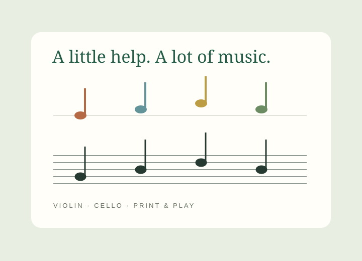

THE PROJECT COLLECTION
A little curiosity.
A world to explore.
A home for my projects, stories and experiments.
Pick something that catches your eye and take a look.
Explore the collection ↓✳
The collection
02 / A GROWING COLLECTION
 THE LITTLE ATLAS · 1492–1504
THE LITTLE ATLAS · 1492–1504
INTERACTIVE STORY · HISTORY
Across an Ocean
Four voyages. Many lives.
A world changed.
Follow Columbus’s journeys through a storybook atlas. Move through the chapters, sail across the map, and meet the communities whose lives these voyages changed.
Begin the journey ↗
LITTLE STAVE · COLOUR TO CONFIDENCEMUSIC WORKSPACE · FAMILY LEARNING
Little Stave
A familiar colour.
A new way to read music.
Bring a violin or cello music photo, enter and check the notes, then print a conventional stave. Try the browser-only demo with local photo cropping, editable notes and MusicXML export.
Automatic photo recognition and family accounts need the full hosted service and are not enabled in this demo.
Try the music room ↗